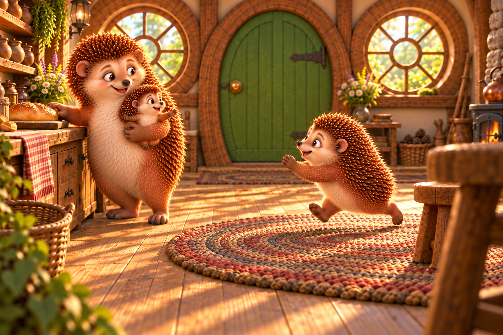

Blender guide Native spherical rendering
Loading native guide…
One fresh generation · native spherical guide
A fresh pass uses two inputs: the panorama rendered directly by Blender and one actual book illustration. The reference guides organic forms, materials, light and natural decoration; the gray guide supplies the camera and architectural anchors.



The full prompt below is the text used for this call. Its two image inputs are shown above, in order.
Open this section to load the exact prompt.
Drag either room to turn both. Pinch or scroll to zoom; keyboard arrows and + / − also work. The reference stays visible for comparison.
Loading native guide…
The generated room can interpret the reference’s craft and botanical detail. Painted decoration does not become modeled geometry.
Loading generated candidate…
This is a new trial, not a controlled test of a single variable: the guide, prompt and generation differ from the earlier experiments. The matched viewer compares viewing direction and openings; it does not certify geometry fidelity or seamless artwork. The existing tour stays unchanged.